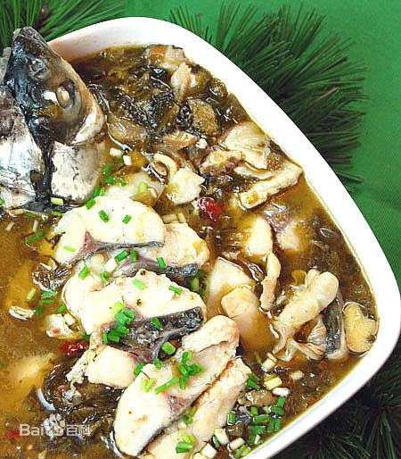
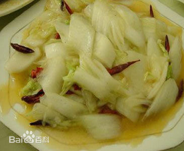

WonderCNF
WonderCNF
The food of flavor sour
Sour can bring the sense with frank and stimulation. Also, it can increase the appetite.

The first dish is:
Fish with Chinese Sauerkraut
Fish with Chinese Sauerkraut is a classic dish from Chongqing in Sichuan province. It has the unique flavor and cooking methods. The main ingredient is fresh grass carp and sichuan pickled vegetables. It was popular in the 1990 s. Also, it is one of the pioneers of Chongqing home cooking.

The second dish is: Sauteed cabbage with vinegar sauce
Sauteed cabbage with vinegar sauce is a han Chinese famous, it belongs to Shandong cuisine. It is sour and a little bit sweet and spicy. The cabbage heart is main ingredient. Green, red pepper, dried shrimp are the ingredients.